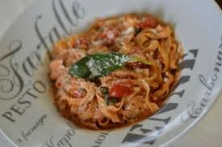

Tagliatelles sauce feta
Ingredients
6×
- 4 blancs de poulet
- 2 poivrons
- 2 blocs de feta
- 2 à 3 tomates
- huile d'olive
- ail et oignons
- sel
- poivre
- herbes de Provence
- 30 cl de coulis de tomate
- 500 g de tagliatelles

Préparation
Étape 1
Couper en dés 4 blancs de poulet, 2 poivrons, 2 blocs de feta et 2 à 3 tomates.
Étape 2
Cuire le poulet et les poivrons dans un peu d’huile d'olive avec ail et oignons, jusqu’à ce que le poulet blanchisse. Assaisonner de sel, poivre et herbes de Provence. Ajouter 30 cl de coulis de tomate et laisser mijoter 10min à feu doux.
Étape 3
Cuire 500 g de tagliatelles. Ajouter la feta à la sauce bien chaude et la laisser fondre, puis ajouter les tomates.
Étape 4
Mélanger les tagliatelles à la sauce et servir sans trop mijoter, pour garder les pâtes fermes.
Conseils
- Variante Boursin : remplacer feta, coulis et tomates par 1 Boursin, 1 boîte de tomates entières, 20cl de crème, ail, oignons et thym.